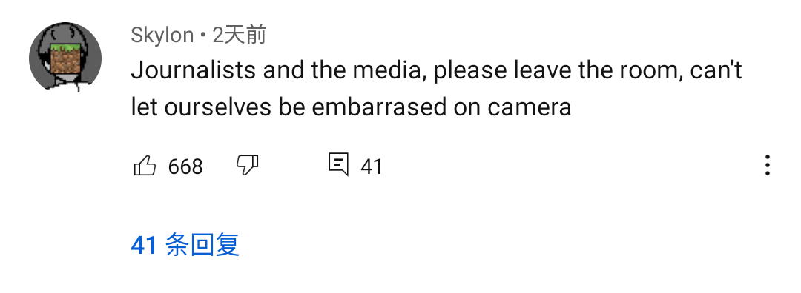
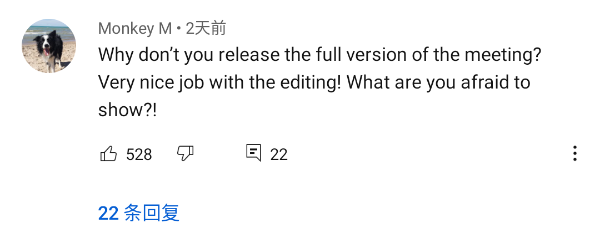

清晨入古寺，初日照高林。
曲径通幽处，禅房花木深。
----温庭筠
1.新闻 🏁
2.百科 🚩
3.名著 🌈️️
中方在中美外交谈判上用强硬的立场毫不客气地教训了美方。
YouTube上歪果友人却反常地一边倒力挺中国
来看看
1.翻译官
众所周知美国翻译染了个格格巫紫头，即使是比较开放自由的墙外也对此十分不满
2.控诉美国霸权主义
以下是美国几家主流媒体关于中美会谈视频底下的评论
首先是德国之声（话说我也好奇为毛德国之声在美国观众那么多）
3.指责美国让中国媒体离开会场和媒体片面报道
尤其是BBC和CNN，基本观众都在骂（这俩媒体差不多相当于人民X报和光明X报）

"记者和媒体请离开房间，不能让我们在镜头前尴尬"（讽刺美国政客心虚）

“所以你们为毛不放完整视频，丫视频剪的真TM好，怕了！！？”（BBC的视频只有美方发言）
4.赞赏中国的态度坚定
"美国没有资格以强人一等的姿态与中国对话 手动换行 这是我第一次看到有国家敢于只接与美国站在对立面"（之后又在底下评论说想看完整视频）
“美国：我是世界的爷爷 手动换行 中国：醒醒吧玄孙”
“当美国阻止媒体工作让媒体离开的时候，杨先生却代表中方坚定的责任心将他们留了下来”
平常的电脑的运行过程基本可以抽象为三部分：CPU，内存，硬盘。
我们通过系统来让电脑为我们所用而系统的运行则通过CPU的运算。
电脑分工明确，CPU只干运算，并不能存储文件，所以操作系统则是以文件的形式存在于电脑的硬盘上。
丫不是说电脑可以抽象成三部分！
由于速度差——CPU的运算速度是以"TB"来衡量也就是2^40 Byte，
即使是 目前最快的固态硬盘里的最快的型号里最快的一批里最快的一个速度撑死每秒几百“MB”也就是2^20 B
差了2后边20个零倍
鱿鱼，每次系统响应你的操作都会生成新文件也会删掉一些旧运算文件，So读取速度直接卡了响应速度的脖子
也就会——动一下鼠标
所以需要有一个读写速度超快的东东提前把整个操作系统放到这个东东里
由于一直运行系统所以让CPU直接向这个东东要运行文件，鱿鱼其超快的读写速度与CPU处于同一量级
电脑就会对你的响应变得正常起来
就这样
cpu哥耕田，硬盘姐管农具，内存孙帮忙将农具递给暴走的u哥
三人幸福快乐地在你的电脑里生活在了一起
1.点赞不多啊？
YouTube由于外国人可能相对我天朝上国不善言辞，
所以评论点赞都不多，能有100就相当于国能几千了
2.图片来源？
本次晨会所有内容由某个不愿提及姓名的 sb人 截图，校对发布
所以本次新闻内容可能大概也许maybe应该是真的
为证明留了俩频道截图(我觉得没人比我更无聊)
综上所述：
本晨会图片版权受到法律保护，如使用请缴纳商业使用金：每张20/元
3.翻译的很烂？
由于某个sb人懒得ocr图片转文字再丢进翻译程序且为了迎合排版，所以存在诸多翻译不足的地方
反正晨会结束你也指正不了了咯咯咯咯:)